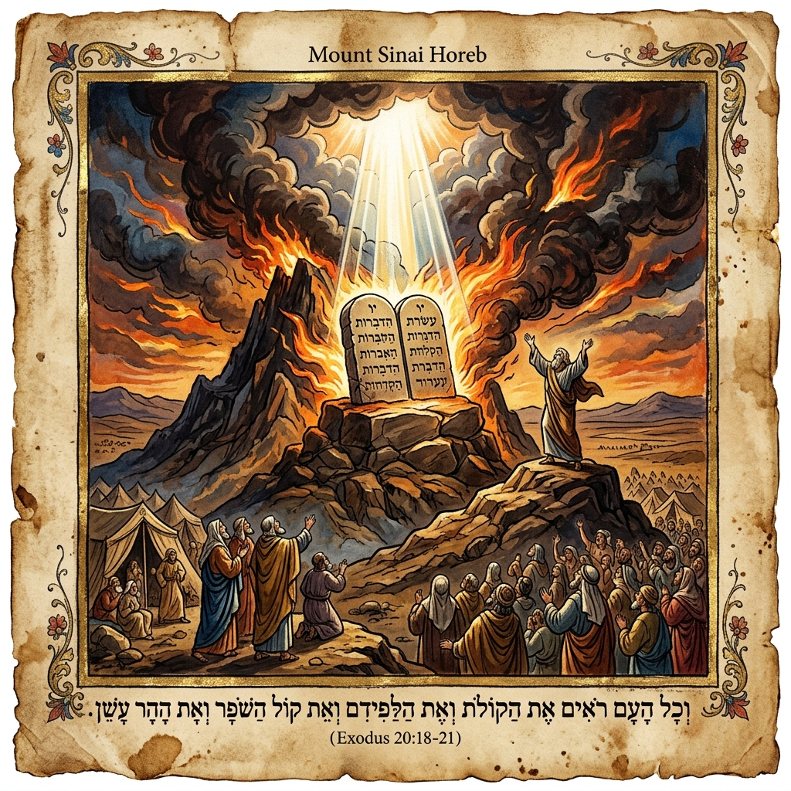
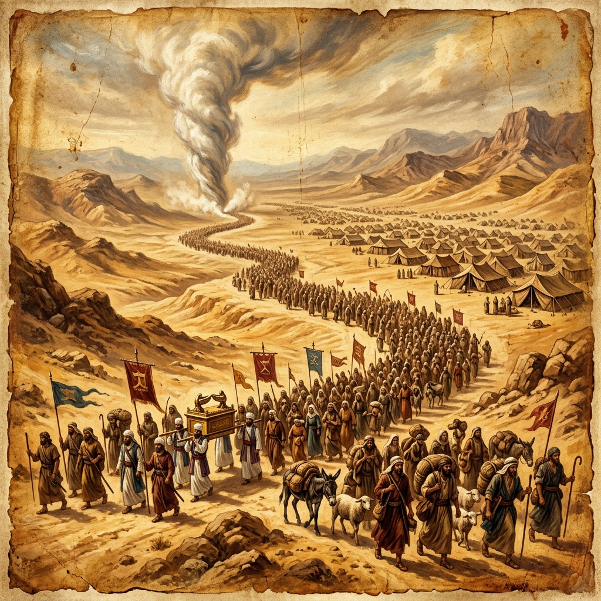
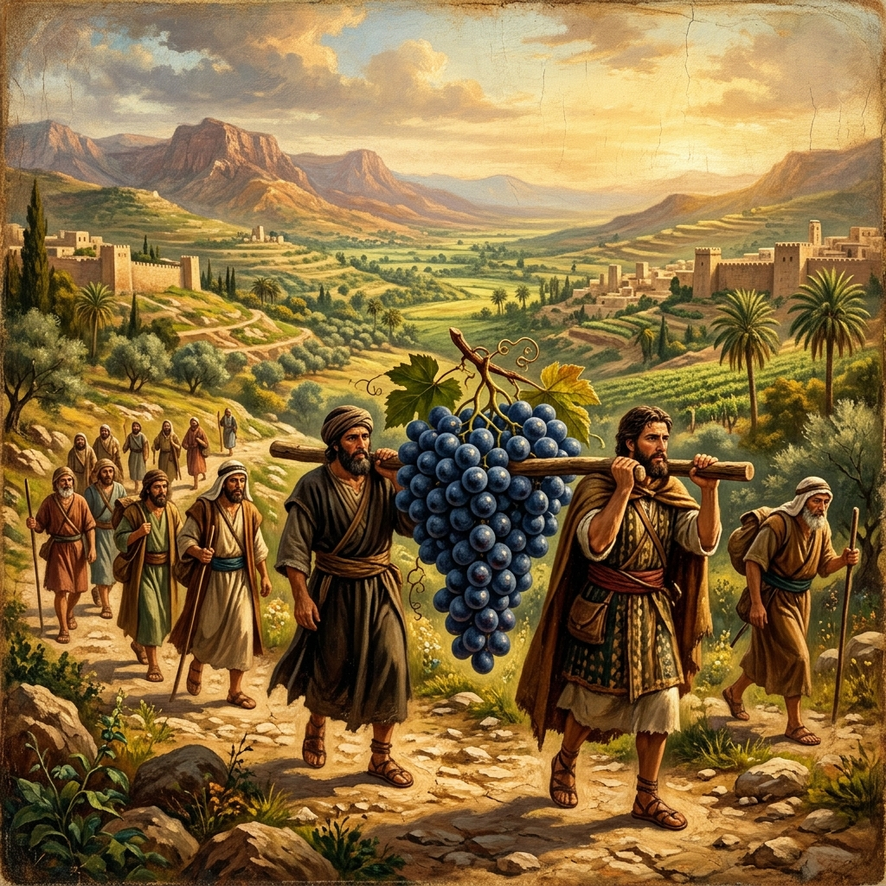
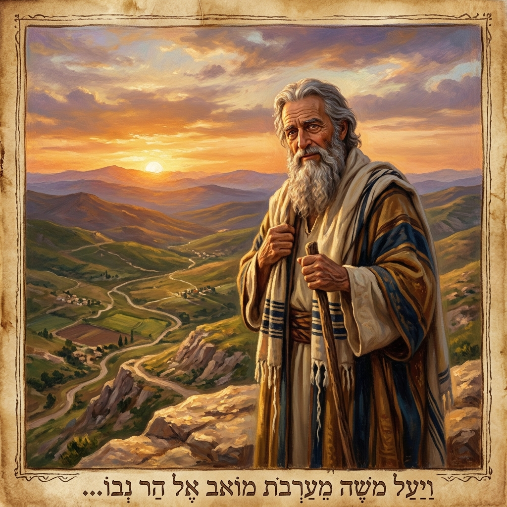

PORTAFOLIO DE APRENDIZAJE:
DEL DESIERTO A LA TIERRA PROMETIDA
DEUTERONOMIO CAPÍTULOS 1, 2, 3 Y 4
INFORMACIÓN DEL TRABAJO ACADÉMICO
Integrantes del Grupo:
• Mariana Ramírez Rueda
• Nancy Marcela Alvarez Garnica
Docente Asignada:
Arelys Caicedo
Fecha de Entrega:
10 de septiembre de 2026
Enfoque Metodológico:
Exégesis, Síntesis Teológica y Aplicación Pastoral
Recordar → Aprender → Creer → Obedecer → Avanzar
“No olvides lo que Dios ha hecho; obedece lo que Dios ha dicho.”
Deuteronomio 1–4 presenta el inicio de las palabras finales de Moisés al pueblo de Israel antes de entrar en la Tierra Prometida. En estos capítulos, Moisés recuerda acontecimientos ocurridos durante el largo peregrinaje por el desierto, especialmente la incredulidad de la generación anterior, las victorias que Dios concedió a Israel y la necesidad apremiante de obedecer sus mandamientos.

Ilustración: La revelación divina en el Monte Horeb y el pacto de la Ley.
Estos capítulos funcionan como una solícita invitación a mirar el pasado para aprender de él y enfrentar el futuro con una fe renovada y obediencia incondicional. Moisés recuerda que Dios había acompañado, sustentado y protegido fielmente a su pueblo a lo largo de cada jornada, pero también demuestra con severa claridad que la desobediencia y la incredulidad traen consecuencias destructivas e irreparable para el pueblo del pacto.
Principio Hermenéutico Clave:
“Deuteronomio 1–4 enseña que la memoria espiritual no consiste únicamente en recordar acontecimientos históricos, sino en reconocer la fidelidad constante de Dios y responder a ella mediante una vida consagrada a la obediencia.”
Al situarse en las llanuras de Moab, frente a Jericó y a las puertas de Canaán, el discurso mosaico renueva el pacto de Sinaí con la nueva generación que no experimentó la esclavitud de Egipto en su adultez, equipándola espiritualmente para conquistar y poseer la herencia prometida.

Ilustración: La columna de gloria guiando a Israel durante su peregrinaje por el gran desierto.
1
Evento 1
Horeb (El Monte de Dios)
Israel recibe las instrucciones y los diez mandamientos directamente del Señor.
2
Evento 2
Horeb → Cades-barnea
El pueblo emprende el trayecto ordenado por el desierto hacia la Tierra Prometida.
3
Evento 3
Los Espías y la Incredulidad
El pueblo envía 12 espías pero cae en el temor y se niega a confiar en Dios.
4
Evento 4
Consecuencia del Juicio Divino
Dios decreta que la generación incrédula perecerá en el desierto sin ver la promesa.
5
Evento 5
Años de Peregrinación
38 años de dar rodeos por el desierto hasta consumirse la generación rebelde.
6
Evento 6
Instrucciones respecto a Edom, Moab y Amón
Dios prohíbe hostigar a los descendientes de Esaú y Lot respetando sus fronteras.
7
Evento 7
Victoria sobre Sehón, Rey de Hesbón
Dios entrega al rey amorreo y a su tierra en manos del ejército israelita.
8
Evento 8
Victoria sobre Og, Rey de Basán
Derrota del gigante Og y conquista de 60 ciudades fortificadas con murallas altas.
9
Evento 9
Distribución de Territorios Transjordánicos
Rubén, Gad y la media tribu de Manasés reciben tierras al oriente del Jordán.
10
Evento 10
Moisés y el Monte Pisga
Moisés suplica entrar en Canaán, pero Dios le concede contemplarla desde la cumbre.
11
Evento 11
Preparación de la Nueva Generación
Exhortación a escuchar los estatutos y decretos para vivir e ingresar a la tierra.
12
Evento 12
Advertencia contra la Idolatría
Llamado a permanecer fieles al único Dios vivo y verdadero que habló en el fuego.

Ilustración: Los espías retornando de Canaán con el fruto de la buena tierra.
DEUTERONOMIO 1
Tema Central: Recordar la Incredulidad en Cades-barnea
- Moisés inicia su discurso recordando la partida del monte Horeb por mandato divino.
- Establecimiento de jueces y líderes capaces sobre millares, centenas y decenas para aligerar la carga de Moisés.
- Llegada estratégica a Cades-barnea y envío de doce espías a inspeccionar la feracidad de la tierra.
- Rebelión del pueblo movido por el temor infundado y los informes desalentadores.
- Juicio de Dios: la generación incrédula perecerá en el desierto; solo Josué y Caleb poseerán la tierra.
- Intento presuntuoso e inoportuno de subir a la montaña sin la presencia de Dios que resultó en una amarga derrota.
Versículo Clave • Deuteronomio 1:8 (RVR1960):
“Mirad, yo os he entregado la tierra; entrad y poseed la tierra que Jehová juró a vuestros padres Abraham, Isaac y Jacob, que les daría a ellos y a su descendencia después de ellos.”
DEUTERONOMIO 2
Tema Central: Dios Guía el Camino y Concede la Victoria
- Reinicio del peregrinaje rodeando el monte Seir durante largos años bajo el cuidado de Dios.
- Instrucciones estrictas de no provocar a Edom (descendientes de Esaú) ni a Moab y Amón (descendientes de Lot).
- Recordatorio de la provisión divina en el desierto: nada le faltó al pueblo durante 40 años.
- Cruce del arroyo de Zered y fin de la generación de los hombres de guerra incrédulos.
- Enfrentamiento y victoria aplastante sobre Sehón, rey de Hesbón, a quien Dios entregó en manos israelitas.
Versículo Clave • Deuteronomio 2:7 (RVR1960):
“Pues Jehová tu Dios te ha bendecido en toda obra de tus manos; él sabe que andas por este gran desierto; estos cuarenta años Jehová tu Dios ha estado contigo, y nada te ha faltado.”

Ilustración: Retrato de Moisés en el monte Pisga contemplando Canaán.
DEUTERONOMIO 3
Tema Central: Victoria, Liderazgo y Preparación para el Futuro
- Enfrentamiento contra Og, rey de Basán, gigante fortificado en Edrei, a quien Dios también derrotó.
- Conquista de 60 ciudades fortificadas y reparto del botín entre las tribus de Israel.
- Asignación territorial en la Transjordania a Rubén, Gad y la media tribu de Manasés bajo el pacto de ir armados a ayudar a sus hermanos.
- Moisés fortalece y comisiona a Josué para liderar la conquista del otro lado del Jordán.
- Oración ferviente de Moisés para cruzar el Jordán; Dios le niega el ingreso pero le permite ver la tierra desde el cumbre del Pisga.
Versículo Clave • Deuteronomio 3:22 (RVR1960):
“No los temáis; porque Jehová vuestro Dios, él es el que pelea por vosotros.”
DEUTERONOMIO 4
Tema Central: Obediencia, Memoria y Fidelidad al Único Dios
- Exhortación vehemente a escuchar y cumplir la ley divina sin añadir ni quitar nada a la Palabra.
- Recordatorio solemne del pacto en Horeb donde el pueblo escuchó la voz de Dios salir del fuego sin ver figura alguna.
- Advertencia tajante contra toda forma de idolatría, culto a imágenes esculpidas o a los astros celestes.
- Proclamación de la singularidad soberana de Dios: Jehová es el único Dios en los cielos y en la tierra.
- Establecimiento de las tres ciudades de refugio al oriente del Jordán (Beser, Ramot y Golán).
Versículos Clave • Deuteronomio 4:1 y 4:39 (RVR1960):
“Ahora, pues, oh Israel, oye los estatutos y decretos que yo os enseño... Aprende pues, hoy, y reflexiona en tu corazón que Jehová es Dios arriba en el cielo y abajo en la tierra, y no hay otro.”
Dios
Israel
Obediencia
Moisés
Fe
Memoria
Pacto
Desierto
Tierra Prometida
Promesa
Horeb
Cades
Josué
Caleb
Victoria
Idolatría
Santidad
Liderazgo
Fidelidad
Mandamientos
Recordar
Escuchar
Avanzar
Enseñanza Bíblica (Deuteronomio 1–4)
Aplicación a la Iglesia Actual
1. Recordar las Obras de Dios
Moisés exige al pueblo recordar la fidelidad de Dios en el desierto para no olvidar su pacto.
Memoria Espiritual Congregacional
La iglesia debe cultivar espacios de testimonio y gratitud, recordando cómo Dios la ha sostenido en crisis.
2. Obedecer la Palabra Revelada
No basta con oír los decretos en Horeb; se exige ponerlos por obra sin añadir ni quitar.
Ortopraxia Cristiana
El conocimiento teológico debe manifestarse en integridad ética, amor al prójimo y obediencia a las Escrituras.
3. Aprender de los Errores del Pasado
La historia de la generación incrédula de Cades-barnea sirve de advertencia solemne.
Madurez Eclesial
Evaluar la historia eclesial para evitar patrones de división, murmuración o falta de fe frente a los desafíos.
4. Confiar ante Gigantes (Og y Sehón)
Los enemigos imponentes no deben doblegar la fe porque Dios pelea por su pueblo.
Valentía Misionera y Pastoral
Enfrentar los desafíos culturales, la oposición o la escasez confiando en el poder supremo de Jesucristo.
5. Formación y Relevo de Líderes
Moisés anima, fortalece y transfiere autoridad a Josué frente a todo el pueblo.
Discipulado Generacional
Mentoría intencional de jóvenes servidores para garantizar la continuidad del ministerio pastoral y misionero.
6. Rechazar los Ídolos Modernos
Advertencia radical contra imágenes, figuras o culto a los astros en Deuteronomio 4.
Examen del Corazón
Identificar y derribar sustitutos modernos de Dios como el materialismo, la fama, el poder o el egoísmo.
7. Unidad y Solidaridad Fraternal
Las tribus transjordánicas debían cruzar armadas para ayudar a sus hermanos a conquistar su herencia.
Comunión y Cooperación Intercongregacional
La iglesia no vive aislada; las comunidades más fuertes deben apoyar a las iglesias más vulnerables.
8. Dios de Oportunidades y Gracia
Deuteronomio 4:29 promete que quien busque sinceramente a Dios en su angustia lo hallará.
Mensaje de Restauración y Esperanza
Proclamar la gracia transformadora del Evangelio que restaura al pecador arrepentido.
Deuteronomio 1–4 nos invita magistralmente a mirar el pasado para comprender el presente y caminar con paso firme hacia el futuro con fe. Moisés recuerda las experiencias dolorosas y victoriosas del pueblo de Israel para demostrar que Dios siempre estuvo presente, guiando, sosteniendo, corrigiendo y dando dirección a su pueblo escogido.
Al mismo tiempo, estos cuatro capítulos iniciales muestran que la incredulidad y la desobediencia traen graves consecuencias. Por eso, recordar las obras portentosas de Dios debe llevarnos inevitablemente a una respuesta coherente de obediencia, devoción y fidelidad.
Recordar → Aprender → Creer → Obedecer → Avanzar
“El pasado no debe ser solamente un recuerdo distante; debe convertirse en una enseñanza viva que nos guíe a caminar con Dios hacia aquello que Él ha preparado.”
BIBLIOGRAFÍA Y FUENTES DE CONSULTA ACADÉMICA
-
Sociedades Bíblicas Unidas. (1960). Santa Biblia, Versión Reina-Valera 1960 (RVR1960). Sociedades Bíblicas Unidas.
-
Craigie, Peter C. (1976). The Book of Deuteronomy. The New International Commentary on the Old Testament. Wm. B. Eerdmans Publishing.
-
Thompson, J. A. (1974). Deuteronomy: An Introduction and Commentary. Tyndale Old Testament Commentaries. InterVarsity Press.
-
Merrill, Eugene H. (1994). Deuteronomy. The New American Commentary (Vol. 4). Broadman & Holman Publishers.
-
Wright, Christopher J. H. (1996). Deuteronomy. New International Biblical Commentary. Hendrickson Publishers.
-
Walton, John H., Matthews, Victor H., & Chavalas, Mark W. (2000). Comentario del Contexto Cultural de la Biblia: Antiguo Testamento. Editorial Clie / IVP.
-
Archer, Gleason L. (1994). Reseña Crítica de una Introducción al Antiguo Testamento. Editorial Portavoz.